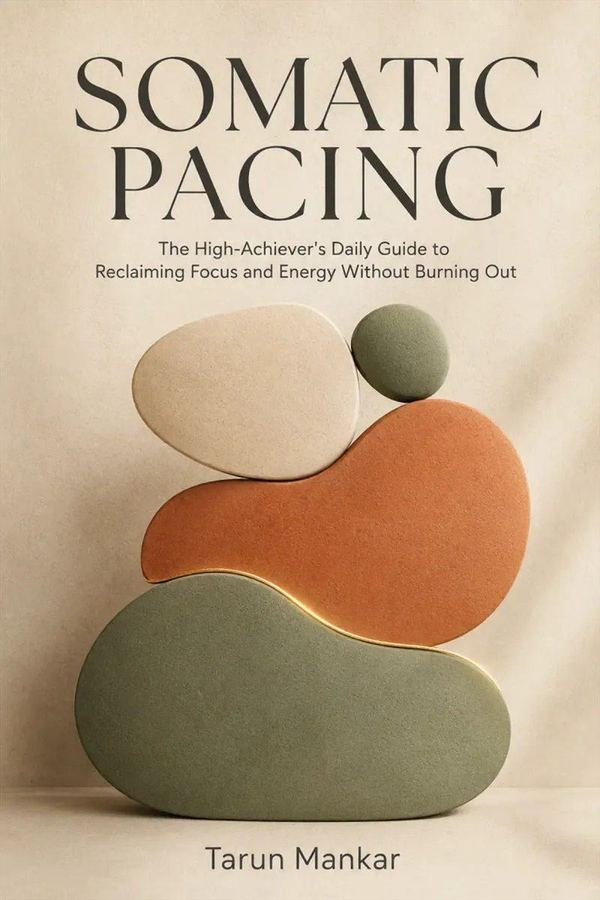
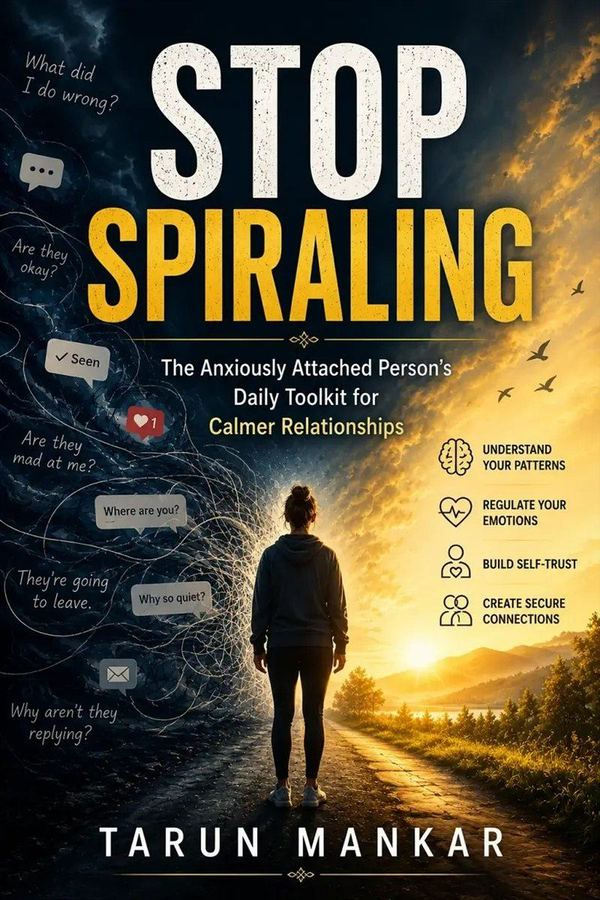
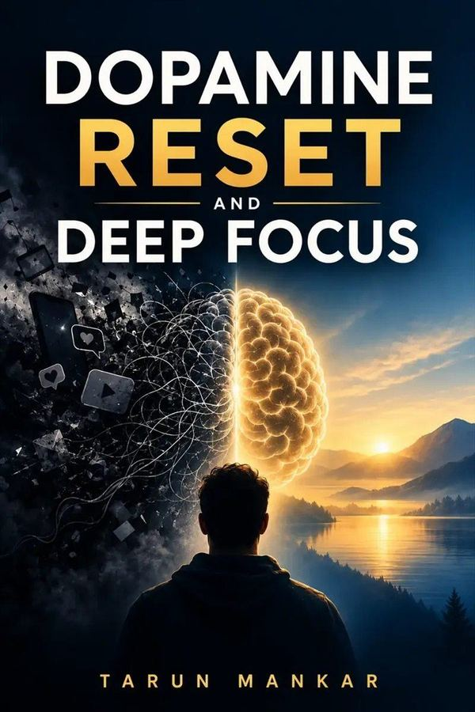
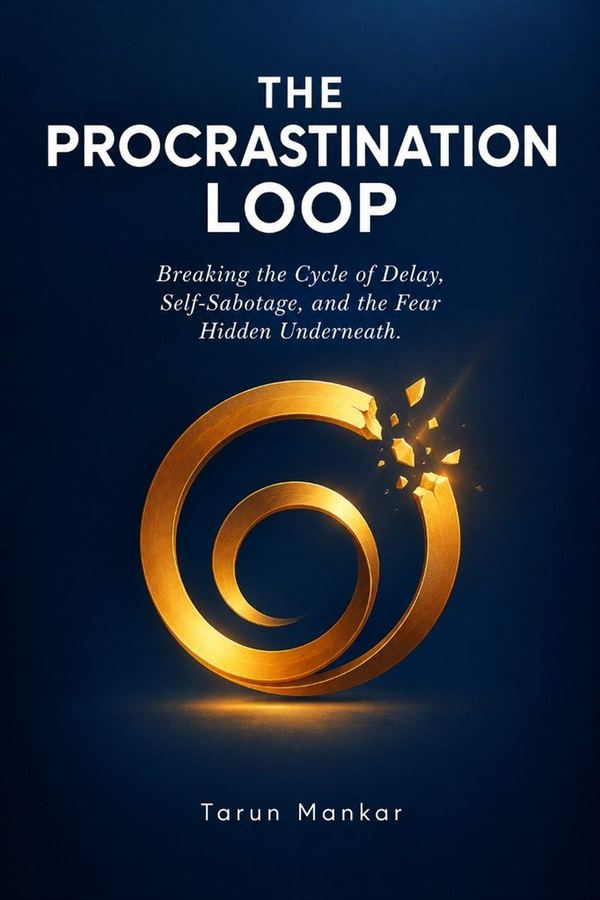
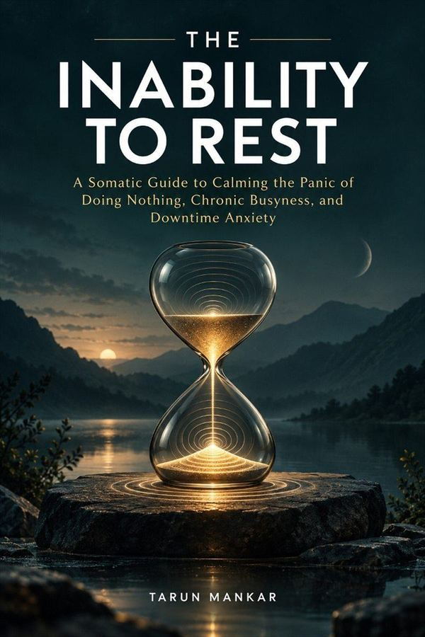

🔥 #1 Bestseller · Start Here
Stop Spiraling
The Anxiously Attached Person's Daily Toolkit for Calmer Relationships
"Sent a text 45 minutes ago and your chest is still burning?"
Practical 60-second body-first resets that calm survival alarms when "thinking positive" fails. Written for modern overthinkers, high achievers, and hypervigilant minds.


Ad visitors & readers: Tap your symptom below to instantly open its 60-second somatic reset toolkit:
Choose what your body and nervous system are trying to tell you right now.
The Anxiously Attached Person's Daily Toolkit for Calmer Relationships
"Sent a text 45 minutes ago and your chest is still burning?"
The High-Achiever's Daily Guide to Reclaiming Focus and Energy Without Burning Out
"Why that 3 PM espresso is making your brain fog worse, not better."
A Daily Guide to Releasing Money Anxiety and Rewiring Your Scarcity Trauma
"Checking your bank balance makes you feel physically sick?"

Reclaiming Attention, Ending Brain Fog, and Mastering Unshakable Discipline
"Why you can't read 3 pages without picking up your phone."
Choosing Your Peace Over People's Expectations
"You say yes when your entire body is screaming no."
Rewiring Anxious Attachment, Silencing Relationship Hypervigilance, and Finding Peace in Love
"An unanswered text sends you into a spiral of panic?"
Taming Emotional Flooding, Calming Instant Reactivity, and Finding Grounding Under Pressure
"Minor annoyances make your blood boil in seconds?"

Breaking the Cycle of Delay, Self-Sabotage, and the Fear Hidden Underneath
"You keep telling yourself you'll start tomorrow."

A Somatic Guide to Breaking Functional Freeze, Emotional Numbness, and Living in Low-Power Mode
"You look functional on the outside but feel completely numb inside."

A Somatic Guide to Calming the Panic of Doing Nothing, Chronic Busyness, and Downtime Anxiety
"You sit down to relax and your chest tightens with unexplained panic."
Real transformations from overthinkers, high achievers, and anxiously attached minds.
"I used to spiral for hours whenever my partner took time to reply, chest tight and heart racing. The 60-second vagus reset in Stop Spiraling physically broke that panic loop for the first time in my life. Worth 100x the price."
"I was surviving on 4 cups of coffee a day, completely wired at midnight and brain-fogged at 2 PM. Somatic Pacing gave me practical nervous system boundaries without feeling like another chore on my to-do list."
"If you have a fawning response and say 'yes' when every cell in your body is screaming 'no', buy this immediately. Zero toxic positivity, just pure practical neurobiology that helps you tolerate disappointing people."
Start reading within 60 seconds on any Kindle device, iPhone, iPad, Android phone, tablet, or web browser with 1-click Amazon delivery.
Prefer holding a real physical book? Enjoy crisp, luxury cream-paper printings delivered with dependable Amazon Prime 1-2 day delivery.
Narrated with measured cadence and deep vocal resonance designed to actively downshift your autonomic nervous system while listening.